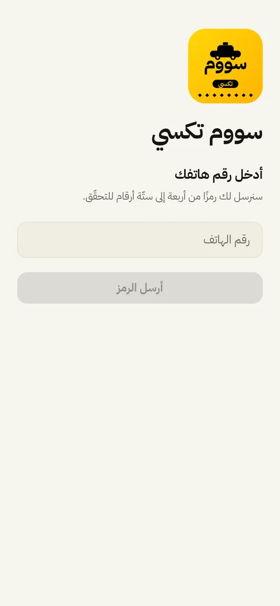
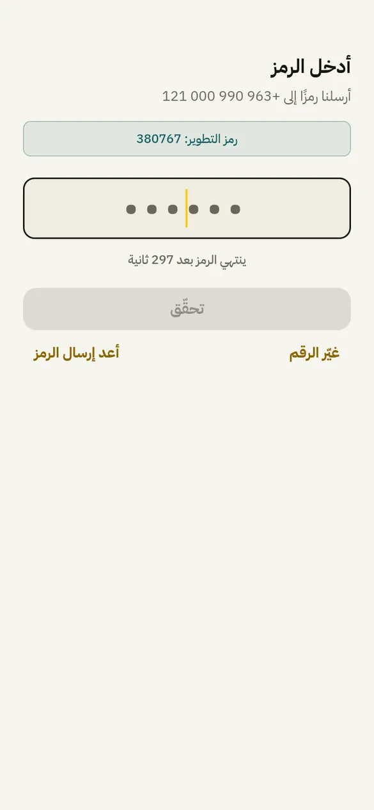

1تسجيل الدخول
- رقم الهاتف السوريّ، ثمّ رمز من 4 إلى 6 أرقام يصل برسالة.
- الرمز ينتهي بعد 5 دقائق، ويمكن إعادة إرساله أو تغيير الرقم.
ملاحظة: سطر «رمز التطوير» في الصورة يظهر في نسخة التطوير فقط. الخادم لا يرسله أبدًا في الإنتاج.

